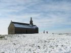
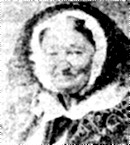

|
GROAH AES 1. Arri groac'h Aes en hon bro, Kessomp meïn bras war en hincho ; Kessomp meïn bras ha meïn bihan War en hent bras en kreïs al lan. 2. Nag an den kos a levere En he goaze war vene Bre : 3. - Woël a ve kernes ha bossen, Wit groac'h Aes en hon c'hichen ; Woël a ve bresel ha maro Wit groac'h Ails en hon c'hevro. 4. Man groac'h Aes en pen a lan, Honnes na deu ket ec'hunan : Truantourien a zo gant-hi Da lakat 'n noas leuren ho ti, 5. - Kessomp meïn bras ha meïn bihan War en hent bras en kreïs al lan. 6. - Kiri houarn a zo ganti ha kesek gwen war he c'hiri ; ................................. 7. Hag er gernes gwen vel an erc'h War gei"n eun eïes deu warlec'h. 8. - Kessomp meïn bras ha meïn bihan War en hent bras en kreïs al lan. 9. - Er brezel gwal, er brezel ter , A deu warle(r)c'h gant an erer , Gant er blei"di, gant er brini, so klasq kat kik tud da dibi. 10. - Kessomp meïn bras ha meïn bihan War en hent bras en kreïs al lan. 11. - Ar vossen du, ar vossen wen, A deu warle(r)c'h en eur c'har pren, En eur c'har pren, n'hen wuic'hourat An Ancou treut hen chareat. 12.- Kessomp meïn bras ha meïn bihan War en hent bras en kreïs al lan. 13. - Warle(r)c'h hounes na velan ken Na velan den war er blenen. Na velan ken mert ar gaen bras O kreiskin war an douar noas, 14. - Arri groac'h Aes en han bro kessomp mei'n bras war an hincho. |
GWRAC'H AHEZ 1. Erru Gwrac'h Ahez en hon bro. Kasomp mein bras war an henchoù! Kasomp mein bras ha mein bihan War an hent bras e-kreiz al lann! 2. Nag an den kos a lavare En e goagez war Venez Bre: 3. - Gwell a ve kernes ha bosenn Vit Gwrac'h Ahez en hon kichen. Gwell a ve brezel ha marv Vit Gwrac'h Ahes en hon c'hevreoù. 4. Ma Gwrac'h Ahes e penn al lann. Honnezh na zeu ket hec'h unan: Truantourien a zo ganti Da lakaat 'n noas leurenn ho ti. 5. - Kasomp mein bras ha mein bihan War an hent bras e-kreiz al lann! 6. - Kirri houarn a zo ganti Ha kezek gwenn war he c'hirri. .............................. 7. Hag ar gernes gwenn vel an erc'h War gein un heizez zeu war-lerc'h. 8. - Kasomp mein bras ha mein bihan War an hent bras e-kreiz al lann! 9. - Ar brezel gwall, ar brezel taer A zeu war lerc'h gand an erer. Gant ar bleizi, gant ar brini Zo 'klask kaout kig dud da zebriñ. 10. - Kasomp mein bras ha mein bihan War an hent bras e-kreiz al lann! 11. - Ar vosenn du, ar vosenn wenn A zeu war-lerc'h en ur c'harr prenn, En ur c'harr prenn a c'hwigourat. An Ankoù treut hen charreat. 12. - Kasomp mein bras ha mein bihan War an hent bras e-kreiz al lann! 13.- War-lerc'h honnezh, na welan ken. Na welan den war ar blaenenn. Na welan ken 'med ar genn vras O kreskiñ war an douar noazh..." 14. - Erru Gwrac'h Ahez en hon bro. Kasomp mein bras war an henchoù! |
THE HAG AHES 1. The Hag Ahes comes to these parts. Let us load large slabs on our carts, Lay big and small rocks to secure And pave the way across the moor! 2. Do you hear what the old man says, Seated atop the Menez-Brez? 3. - Better plague of our own and dearth Than Ahes passing along our earth. Death and woes are sooner dismissed Than the Hag Ahes in our midst. 4. Hag Ahes is at the moor's end. But not her alone: all her band: Rogues and villains coming to boot, Our homes to plunder and to loot. 5. - Lay big and small rocks to secure And pave the way across the moor! 6. - Now iron waggons follow on Which by snow white horses are drawn. ......................... 7. - Next comes hunger as white as snow, Riding on the back of a doe. 8. - Lay big and small rocks to secure And pave the way across the moor! 9. The war, gruesome to the feeble Follows, with a circling eagle, And wolves and crows lured by their greed For human flesh whereon to feed. 10. - Lay big and small rocks to secure And pave the way across the moor! 11. - White and black plague are two dragons, Hitched up to a wooden waggon. A wooden waggon whose wheels creak Driven by Ankou, the thin freak. 12. - Lay big and small rocks to secure And pave the way across the moor! 13. After him... I'm searching in vain: No one to be seen on the plain. Nothing but yonder immense wedge Driving into bare ground its edge..." 14. - Lay big and small rocks to secure And pave the way across the moor! Translated by Ch. Souchon (c) 2011 |
